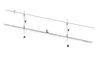

hydraulic

Definition: Hydraulics (from Ancient Greek ὕδωρ (húdōr) 'water', and αὐλός (aulós) 'pipe') is a technology and applied science using engineering, chemistry, and other sciences involving the mechanical properties and use of liquids. At a very basic level, hydraulics is the liquid counterpart of pneumatics, which concerns gases. Fluid mechanics provides the theoretical foundation for hydraulics, which focuses on applied engineering using the properties of fluids. In its fluid power applications, hydraulics is used for the generation, control, and transmission of power by the use of pressurized liquids. Hydraulic topics range through some parts of science and most of engineering modules, and cover concepts such as pipe flow, dam design, fluidics and fluid control circuitry. The principles of hydraulics are in use naturally in the human body within the vascular system and erectile tissue.
Source: Wikipedia
Wikipedia Page (Something wrong with this association? Let us know.)
Wikidata Page (Something wrong with this association? Let us know.)